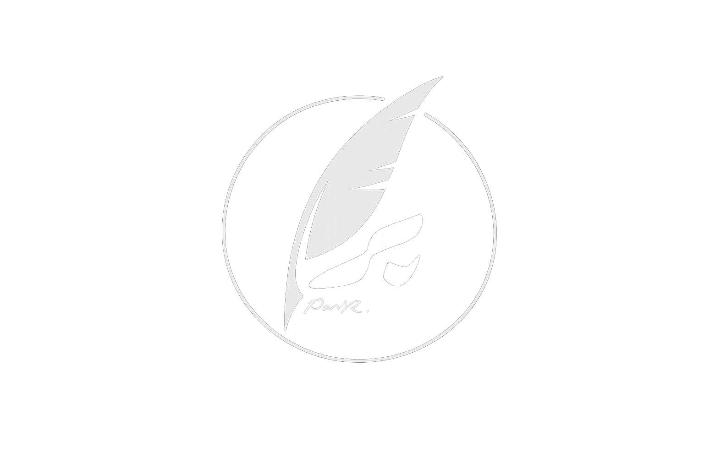

I am Paniz Rafaghati, a Tehran-based photographer working across photojournalism, editorial photography, theatre and music photography, documentary photography, and event coverage, as well as exhibition documentation.
My photographic perspective is shaped by observing people, places, and moments that often go unnoticed as we pass through everyday life. I am drawn to exploring the relationship between light, movement, space, and human presence. Through photography, I seek to capture moments and present narratives that extend beyond what is immediately visible.
For me, photography is not simply about documenting what happens; it is a way of discovering new ways of seeing and interpreting the world.
من پانیذ رفاقتی هستم، عکاس ساکن تهران که در حوزه عکاسی خبری و مطبوعاتی، عکاسی تئاتر و موسیقی، مستند و رویداد، همچنین برگزاری نمایشگاهها فعالیت میکنم.
نگاه عکاسانه من بر پایه مشاهده انسانها، مکانها و لحظاتی شکل گرفته است که اغلب بیتوجه از کنارشان عبور میکنیم. علاقهمند به کشف ارتباط میان نور، حرکت، فضا و حضور انسان هستم و تلاش میکنم از طریق تصویر، لحظات را ثبت کنم و روایتهایی را به نمایش بگذارم که فراتر از آن چیزی هستند که در نگاه نخست دیده میشوند.
برای من، عکاسی صرفاً ثبت آنچه اتفاق میافتد نیست؛ بلکه راهی برای کشف شیوههای تازهای از دیدن و تفسیر جهان است.